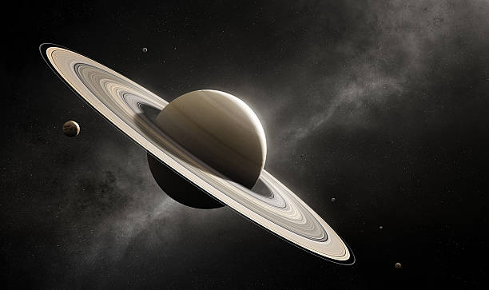

Saturn

- The Saturn
-
Saturn is the sixth planet from the Sun and the second-largest planet in our solar system. Like fellow gas giant Jupiter, Saturn is a massive ball made mostly of hydrogen and helium.
Saturn is not the only planet to have rings, but none are as spectacular or as complex as Saturn's. Saturn also has dozens of moons.
-
From the jets of water that spray from Saturn's moon Enceladus to the methane lakes on smoggy Titan,
the Saturn system is a rich source of scientific discovery and still holds many mysteries.
-
When Galileo Galilei saw Saturn through a telescope in the 1600s, he wasn't sure what he was seeing.
At first he thought he was looking at three planets, or a planet with handles.
Now we know those "handles" turned out to be the rings of Saturn.
- Planet Type
- Saturn is a Jovian planet also known as gas giant.
- Moons
- Orbital Period
- about 29.4 Earth years (10,756 Earth days)
- Rotation
- One day on Saturn goes by in just 10.7 hours.
- Diameter
- 72,400 miles (116,500 kilometers)
- Mass
- Volume
- Composition/Structure
-
Saturn is made mostly of hydrogen and helium
-
At Saturn's center is a dense core of metals like iron and nickel
surrounded by rocky material and other compounds solidified by intense pressure
and heat
- Temperature
- Facts
- Saturn's rings are made up of bits of ice, dust and rock. Some of these pieces are smaller than a grain of sand while others are taller than skyscrapers!
- You cannot stand on Saturn, it's surface is mainly made of Helium
- Saturn has 146 moons, it is a planet that has the most moons in the Solar System
- Saturn has a moon bigger than Mercury called Titan
- References